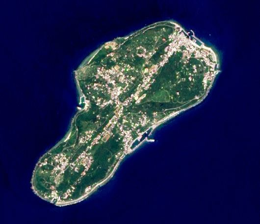

"몰디브가 러시아 제재 회피 비밀 허브로"… 서방 감시망의 사각지대
미국 언론이 몰디브가 러시아의 제재 회피 통로로 이용되고 있다고 보도했다. 선박 등록과 금융 거래를 활용한 우회로가 서방 감시망에서 포착되기 어렵다는 지적이다.
방문연 기자 · 2026.09.03
橋국제

미국 언론은 몰디브가 러시아의 제재 회피를 위한 비밀 허브가 되고 있으며, 서방이 이를 막기 어려운 구조라고 보도했다.
광고 문의 · 300×250제재 회피는 통상 세 가지 경로로 이뤄진다. 선박의 국적을 바꾸는 편의치적, 중개 무역업체를 거치는 원산지 세탁, 그리고 제3국 은행을 이용한 결제 우회다.
몰디브가 지목된 배경으로는 해상 교통의 위치와 상대적으로 느슨한 등록·금융 절차가 거론된다. 소규모 국가가 국제 감시 체계의 사각지대가 되는 구조는 이전에도 여러 차례 지적돼 왔다.
서방이 대응하기 어려운 이유는 관할권 문제다. 제재는 각국 법에 따라 집행되므로, 제재에 참여하지 않는 나라의 영역에서 일어나는 거래를 직접 규제하기 어렵다.
실효적 수단은 2차 제재다. 제재 회피에 관여한 제3국 기업과 은행을 제재 대상에 포함하는 방식인데, 외교적 마찰과 시장 혼란을 동반해 신중하게 적용된다.
아시아 무역업계에도 관련성이 있다. 중개 거래에 참여했다가 뒤늦게 제재 위반 문제가 제기되는 사례가 있어, 거래 상대방 확인 절차가 실무적으로 중요해졌다.
보도는 언론의 취재 결과이며 각국 정부의 공식 확인과는 구별된다. 몰디브 정부의 입장 표명과 관련국 조사 결과가 뒤따라야 사실관계가 정리된다.
출처·참고 (사실 확인용 — 본문은 직접 재작성)
· https://www.ltn.com.tw/
· https://www.ltn.com.tw/